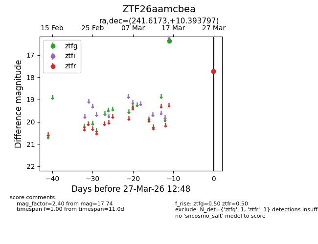
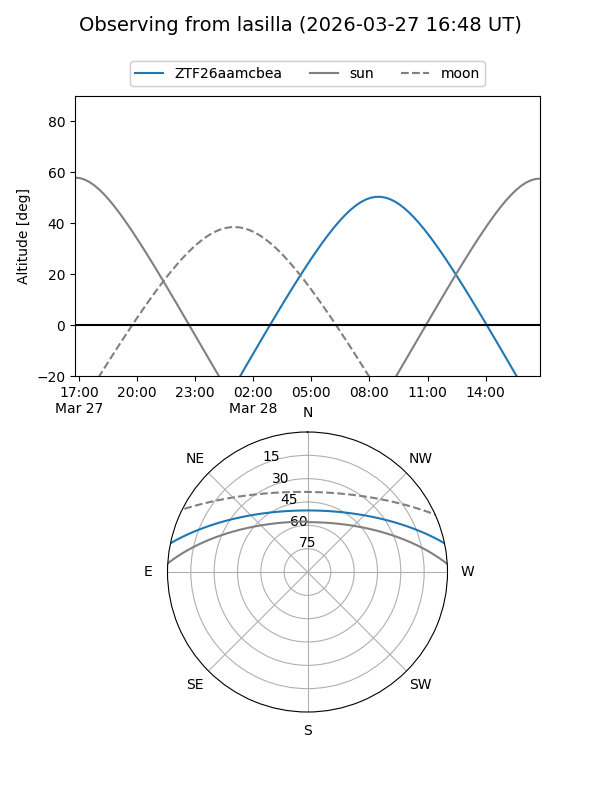
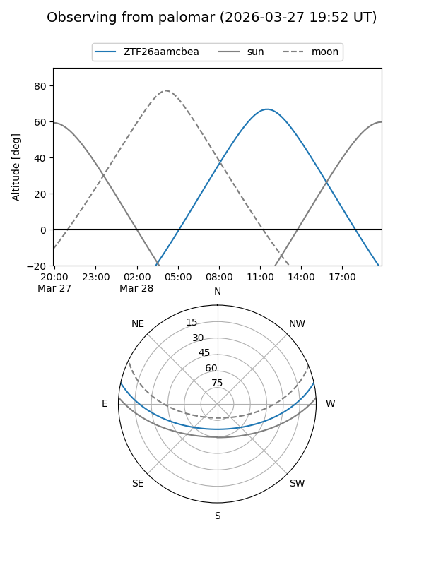
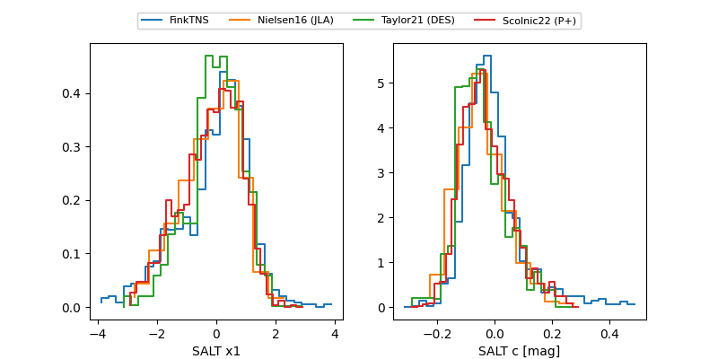

ZTF26aamcbea
Target ZTF26aamcbea at 2026-03-27 12:50
Aliases and brokers:
FINK: link
Lasair: link
ALeRCE: link
alt names
ZTF26aamcbea (ztf,fink_ztf)
Coordinates:
equatorial (ra, dec) = 241.6173,+10.39380
equatorial (HMS+DMS) = 16:06:28.16,+10:23:37.67
galactic (l, b) = (22.5795,+41.25076)
Flags:
Photometry:
last ztfg=16.38, ztfr=17.74
1 ztfg, 1 ztfr detections
Lightcurve

Visibility


Additional plots
